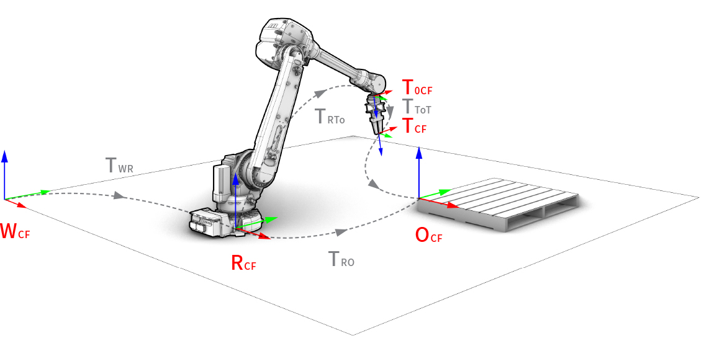
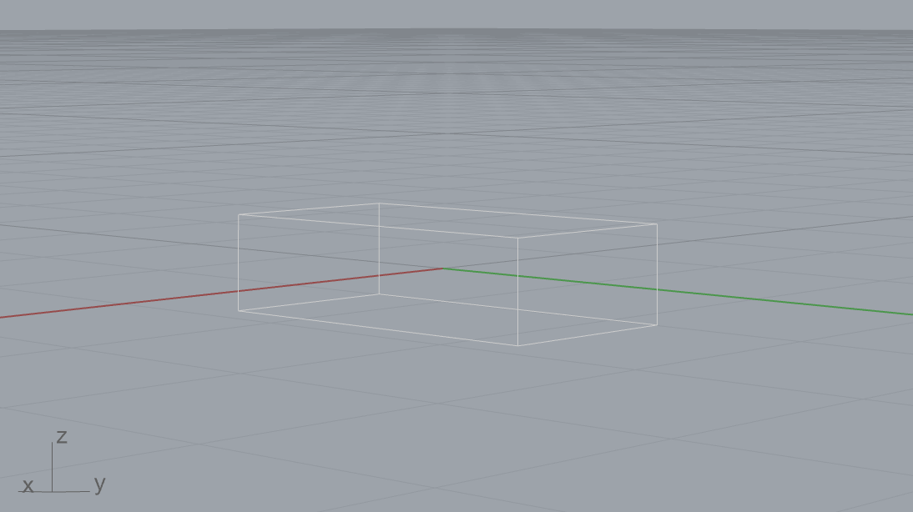
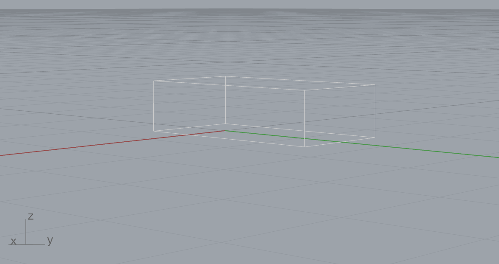
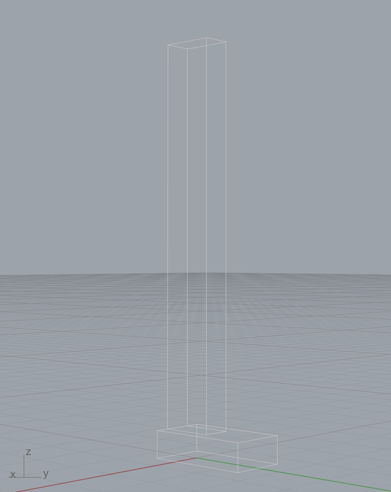
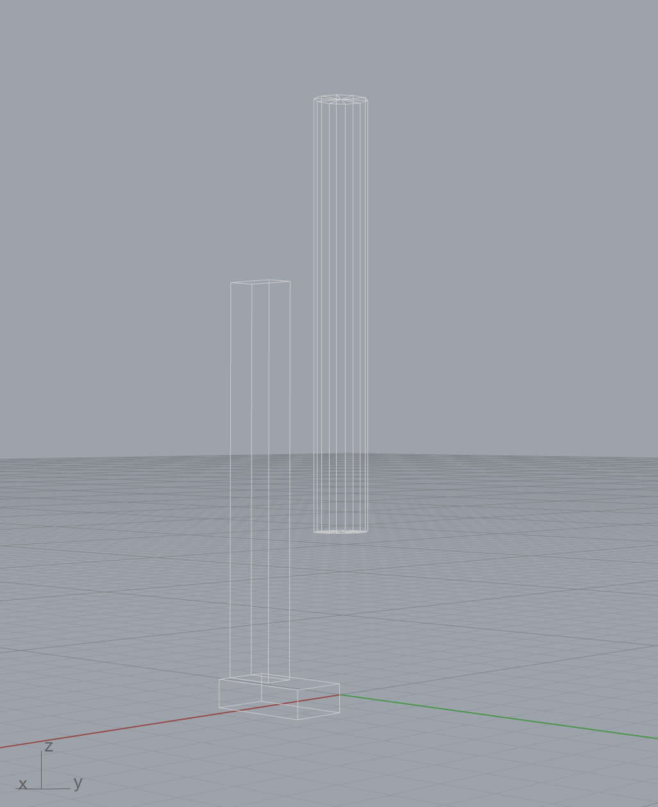
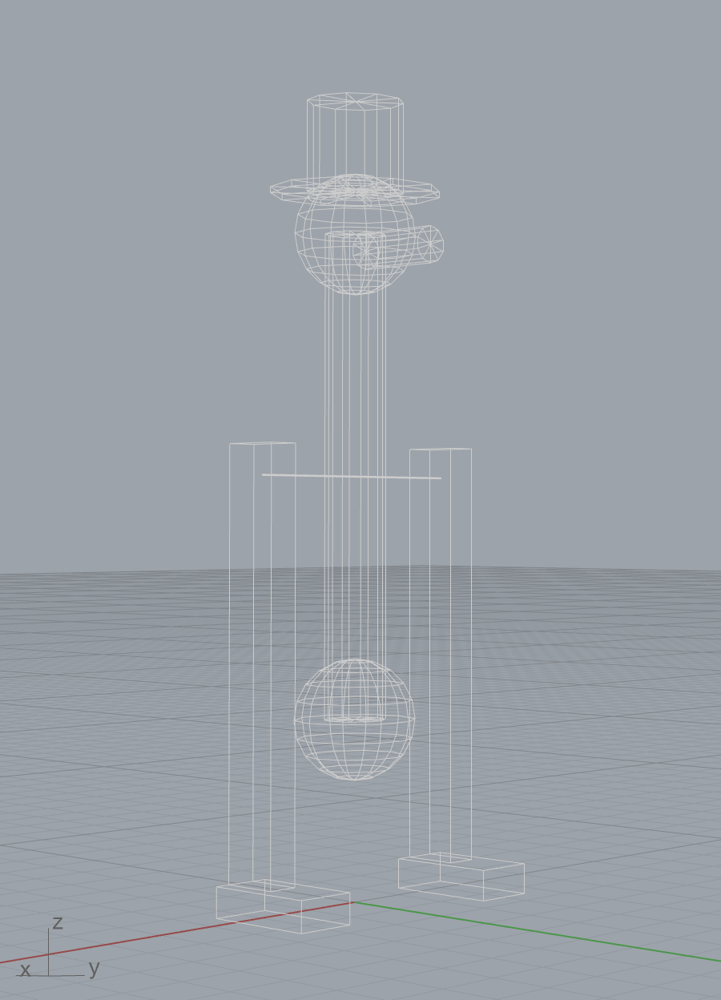

Tutorial¤
compas_robots provides several fundamental structures and features that simplify working
with robot models, kinematic chains and coordinate frames. On top of this,
the COMPAS FAB extension
package provides additional functionality to connect these models with planning
and execution tools and libraries.
Coordinate frames¤
One of the most basic concepts related to robotics that COMPAS provides are coordinate frames, which are described using the Frame class.
In any robotic setup, there exist multiple coordinate frames, and each one is defined in relation to the next. Examples of typical coordinate frames are:
- World coordinate frame (
WCF) - Robot coordinate frame (
RCF) - Tool0 coordinate frame (
T0CF) - Tool coordinate frame (
TCF) - Object coordinate frame (
OCF)

A coordinate frame is defined as a point and two orthonormal base vectors
(xaxis, yaxis). Both the point and the vectors can be defined
using simple lists of XYZ components or using classes. Frames are
right-handed coordinate systems. The following two examples are equivalent:
>>> from compas.geometry import Frame, Point, Vector
>>> frame = Frame([0, 0, 0], [1, 0, 0], [0, 1, 0])
>>> frame.point
Point(x=0.000, y=0.000, z=0.000)
>>> frame = Frame(Point(0, 0, 0), Vector(1, 0, 0), Vector(0, 1, 0))
>>> frame.point
Point(x=0.000, y=0.000, z=0.000)
There are shorthand constructors for the frames located at (0.0, 0.0, 0.0):
And there are additional constructors to create coordinate frames from alternative representations such as:
>>> f4 = Frame.from_axis_angle_vector([0, 0, 0], point=[0, 0, 0])
>>> f5 = Frame.from_points([0, 0, 0], [1, 0, 0], [0, 1, 0])
>>> f6 = Frame.from_quaternion([1, 0, 0, 0], point=[0, 0, 0])
The relationship between coordinate frames is expressed as a Transformation between the two:
>>> from compas.geometry import Transformation
>>> f1 = Frame([15, 15, 15], [0, 1, 0], [0, 0, 1])
>>> f2 = Frame.worldXY()
>>> t = Transformation.from_frame_to_frame(f1, f2)
A very common need is to describe the position and rotation of an object
(eg. point, vector, mesh, etc.) in relation to its local coordinate frame,
and then transform it to the world coordinate frame, and vice versa.
These operations are simplified with the methods to_local_coordinates
and to_world_coordinates of frames:
>>> f1 = Frame([130, 25, 80], [1, 0, 0], [0, 1, 0])
>>> local_point = Point(10, 10, 10)
>>> f1.to_world_coordinates(local_point)
Point(x=140.000, y=35.000, z=90.000)
Conversely, an object defined in world coordinate frame can be transformed to
a local coordinate frame using the to_local_coordinates method:
>>> p = Point(10, 10, 10)
>>> f1 = Frame([130, 25, 80], [1, 0, 0], [0, 1, 0])
>>> f1.to_local_coordinates(p)
Point(x=-120.000, y=-15.000, z=-70.000)
Robot models¤
Robotic arms, like those typically used in digital fabrication, are fundamentally kinematic chains of rigid bodies, i.e. links, connected by joints to provide constrained motion. Kinematics is a subdomain of mechanics, and contrary to dynamics, it concerns the laws of motion without considering forces.
A robot model is a set of links and joints that form a tree structure where each joint has a coordinate frame around which it rotates or translates, depending on the joint type.
This package supports robot models defined in a standard robot description format
called URDF, which originates in the ROS community.
Links¤
Links are the rigid bodies in a robot model. They can have zero or more geometries associated. Associated geometry can serve visual or collision purposes. Collision geometry is generally a simplified version of visual geometry to speed up the collision checking process.
Joints¤
Joints are the connecting elements between links. There are four main types of joints:
- Revolute: A hinge joint that rotates along the axis and has a limited range specified by the upper and lower limits.
- Continuous: A hinge joint that rotates along the axis and has no limits.
- Prismatic: A sliding joint that slides along the axis, and has a limited range specified by the upper and lower limits.
- Fixed: Not really a joint because it cannot move, all degrees of freedom are locked.
Visualizing robots¤
Before jumping into how to build a robot model, let's first see how to visualize one. This is done through the COMPAS Scene, and the procedure is the same in every supported environment (Rhino, Blender, Grasshopper, and the COMPAS viewer).
Drawing a robot¤
The basic pattern is the same for any robot model: load it, add it to a scene, and draw the scene.
from compas.scene import Scene
from compas_robots import RobotModel
model = RobotModel('Robby')
# Add some geometry to Robby here
scene = Scene()
scene.add(model)
scene.draw()
An empty robot is not very exciting, of course. Let's draw a real one.
Posing a robot¤
We can load a robot model from a URDF file, compas_robots provides some built-in URDFs for testing and demonstration purposes, so let's load the UR5e industrial arm. Here it is in its "ready" pose:
import math
from compas_robots import RobotModel
from compas.scene import Scene
model = RobotModel.ur5e(load_geometry=True)
config = model.zero_configuration()
config["shoulder_pan_joint"] = 0.0
config["shoulder_lift_joint"] = -math.pi / 2
config["elbow_joint"] = math.pi / 2
config["wrist_1_joint"] = -math.pi / 2
config["wrist_2_joint"] = -math.pi / 2
config["wrist_3_joint"] = 0.0
scene = Scene()
scene_object = scene.add(model)
scene_object.update(config)
scene.draw()
import math
from compas_robots import RobotModel
from compas.scene import Scene
model = RobotModel.ur5e(load_geometry=True)
config = model.zero_configuration()
config["shoulder_pan_joint"] = 0.0
config["shoulder_lift_joint"] = -math.pi / 2
config["elbow_joint"] = math.pi / 2
config["wrist_1_joint"] = -math.pi / 2
config["wrist_2_joint"] = -math.pi / 2
config["wrist_3_joint"] = 0.0
scene = Scene()
scene_object = scene.add(model)
scene_object.update(config)
a = scene.draw()
import math
from compas_robots import RobotModel
from compas.scene import Scene
model = RobotModel.ur5e(load_geometry=True)
config = model.zero_configuration()
config["shoulder_pan_joint"] = 0.0
config["shoulder_lift_joint"] = -math.pi / 2
config["elbow_joint"] = math.pi / 2
config["wrist_1_joint"] = -math.pi / 2
config["wrist_2_joint"] = -math.pi / 2
config["wrist_3_joint"] = 0.0
scene = Scene()
scene_object = scene.add(model)
scene_object.update(config)
scene.draw()
import math
from compas_viewer import Viewer
from compas_robots import RobotModel
model = RobotModel.ur5e(load_geometry=True)
config = model.zero_configuration()
config["shoulder_pan_joint"] = 0.0
config["shoulder_lift_joint"] = -math.pi / 2
config["elbow_joint"] = math.pi / 2
config["wrist_1_joint"] = -math.pi / 2
config["wrist_2_joint"] = -math.pi / 2
config["wrist_3_joint"] = 0.0
viewer = Viewer()
scene_object = viewer.scene.add(model)
scene_object.update(config)
viewer.show()
A Configuration is just a mapping from joint names to joint values. Joint values
are in radians for revolute joints, meters for prismatic ones. The UR5e has six
configurable joints; we start from model.zero_configuration() (all
zeros) and override the values that define the pose. The arm ends up
folded forward with the elbow bent up: the standard "ready" configuration
used in most UR demos.
Updating the pose¤
Once a robot has been added to a scene, you can change its pose at any
time by calling update() with a new configuration. There is no need to
recreate the scene object:
# Continuing from above: model, scene and scene_object already exist.
new_config = model.zero_configuration()
new_config["elbow_joint"] = math.pi / 4
scene_object.update(new_config)
scene.draw()
This update() call is the building block for everything dynamic:
visualizing a planned trajectory, animating a sequence of poses, or
driving an interactive control surface.
Animating a robot¤
Once a scene knows how to draw a robot, animating it is just calling
update() with a different configuration for each frame. There are two
common ways to do this in Blender, depending on whether you want the
motion baked into the timeline or driven live.
Both examples below pick two random configurations as the start and end
of the motion and linearly interpolate between them. Every run picks a
different pair of poses, so try them a few times to see a variety of
motions. The arm occasionally clips through itself because
random_configuration() samples uniformly within joint limits and
doesn't check for self-collision, but the animation pattern is the same
regardless of where the configurations come from.
Bake one keyframe per frame onto Blender's timeline. After the script
finishes, the animation lives in the .blend file and can be scrubbed,
looped, or rendered to a video, no script needs to be running.
import bpy
from compas.scene import Scene
from compas_robots import RobotModel
model = RobotModel.ur5e(load_geometry=True)
N_FRAMES = 60
START_POSE = model.random_configuration()
END_POSE = model.random_configuration()
scene = Scene()
scene_object = scene.add(model)
visual_meshes = scene_object.draw_visual()
bpy.context.scene.frame_start = 1
bpy.context.scene.frame_end = N_FRAMES
for frame in range(1, N_FRAMES + 1):
bpy.context.scene.frame_set(frame)
t = (frame - 1) / (N_FRAMES - 1)
config = model.zero_configuration()
for joint in START_POSE:
config[joint] = START_POSE[joint] + (END_POSE[joint] - START_POSE[joint]) * t
scene_object.update(config)
for mesh in visual_meshes:
mesh.keyframe_insert(data_path="location")
mesh.keyframe_insert(data_path="rotation_euler")
bpy.ops.screen.animation_play()
If you want the motion to happen now, while a script is running,
without modifying the timeline, use bpy.app.timers. Each tick runs
update() with a freshly interpolated configuration, and Blender
repaints the viewport between ticks.
import bpy
from compas.scene import Scene
from compas_robots import RobotModel
model = RobotModel.ur5e(load_geometry=True)
N_STEPS = 60
START_POSE = model.random_configuration()
END_POSE = model.random_configuration()
scene = Scene()
scene_object = scene.add(model)
scene_object.draw_visual()
state = {"step": 0}
def tick():
if state["step"] > N_STEPS:
return None # returning None unregisters the timer
t = state["step"] / N_STEPS
config = model.zero_configuration()
for joint in START_POSE:
config[joint] = START_POSE[joint] + (END_POSE[joint] - START_POSE[joint]) * t
scene_object.update(config)
state["step"] += 1
return 1 / 30 # call again in 1/30 s
bpy.app.timers.register(tick)
In Grasshopper, you can use compas_ghpython.timer.update_component to
re-trigger a GhPython component after a specified interval. The example
below updates the component every ~33 ms (approximately 30 fps) while
the motion is in progress.
"""Animate a UR5e in Grasshopper using a self-rescheduling component.
Paste this script into a GhPython component. The component re-triggers itself
every ~33 ms (≈ 30 fps) via compas_ghpython.timer.update_component while `run` is True.
State is kept in scriptcontext.sticky so it survives between re-evaluations.
Inputs
------
run : bool
Connect a Toggle. Flip to True to start, False to stop.
reset : bool
Connect a Button. Press to pick new random start/end poses and restart.
"""
from compas.scene import Scene
from compas_ghpython.timer import update_component
from scriptcontext import sticky # type: ignore
from compas_robots import RobotModel
N_STEPS = 60
INTERVAL_MS = 33 # ≈ 30 fps
# ---- one-time initialisation ------------------------------------------------
if "model" not in sticky or reset:
model = RobotModel.ur5e(load_geometry=True)
scene = Scene()
scene_object = scene.add(model)
sticky["model"] = model
sticky["scene_object"] = scene_object
sticky["start"] = model.random_configuration()
sticky["end"] = model.random_configuration()
sticky["step"] = 0
model = sticky["model"]
scene_object = sticky["scene_object"]
# ---- per-tick update --------------------------------------------------------
step = sticky["step"]
if run:
t = (step % N_STEPS) / N_STEPS
start = sticky["start"]
end = sticky["end"]
config = model.zero_configuration()
for joint in start:
config[joint] = start[joint] + (end[joint] - start[joint]) * t
scene_object.update(config)
a = scene_object.draw_visual()
sticky["step"] = step + 1
update_component(ghenv, INTERVAL_MS) # noqa: F821 (ghenv is injected by GhPython)
Building robot models¤
Robot models are represented by the RobotModel class. There are various ways to construct a robot model. The following snippet shows how to construct one programmatically:
from compas_robots import RobotModel
from compas_robots.model import Joint, Link
j1 = Joint('joint_1', 'revolute', parent='base', child='link_1')
j2 = Joint('joint_2', 'revolute', parent='link_1', child='link_2')
j3 = Joint('joint_3', 'revolute', parent='link_2', child='link_3')
j4 = Joint('joint_4', 'revolute', parent='link_3', child='link_4')
j5 = Joint('joint_5', 'revolute', parent='link_4', child='link_5')
j6 = Joint('joint_6', 'revolute', parent='link_5', child='link_6')
l0 = Link('base')
l1 = Link('link_1')
l2 = Link('link_2')
l3 = Link('link_3')
l4 = Link('link_4')
l5 = Link('link_5')
l6 = Link('link_6')
links = [l0, l1, l2, l3, l4, l5, l6]
joints = [j1, j2, j3, j4, j5, j6]
robot = RobotModel('johnny-5', joints=joints, links=links)
robot.get_configurable_joint_names()
This approach can end up being very verbose, so the methods add_link
and add_joint of RobotModel offer an alternative that
significantly reduces the amount of code required. Starting with an empty
robot model, adding a link in the shape of a box is as easy as:
from compas.geometry import Box, Frame
from compas_robots import RobotModel
model = RobotModel(name='Boxy')
box = Box(1, 2, .5)
_ = model.add_link(name='box_link', visual_meshes=[box])
This code snippet can be modified and run in a Rhino python editor to visualize Boxy. Throughout the rest of this tutorial, the code snippets will include the lines for visualization in Rhino, but be aware that the class RobotModel can be used, and is useful, outside of a CAD environment.
from compas.scene import Scene
from compas.geometry import Box, Frame
from compas_robots import RobotModel
model = RobotModel(name='Boxy')
box = Box(1, 2, .5)
model.add_link(name='box_link', visual_meshes=[box])
scene = Scene()
scene.add(model)
scene.draw()

As can be seen, this has added a box of dimensions 1 x 2 x .5
whose geometric center and orientation coincides with the world XY frame.
The visual_meshes argument can be given a list containing COMPAS
primitives such as Box or the more complex
COMPAS meshes Mesh. For simplicity,
this tutorial uses only primitives.
To reposition the box relative to the link's origin, simply change the frame of the provided box. To move the box so that it sits above the XY plane, the origin must be shifted in the z-direction by half the height of the box. The box is also shifted slightly forward in the y-direction:
from compas.scene import Scene
from compas.geometry import Box, Frame
from compas_robots import RobotModel
model = RobotModel(name='Boxy')
box = Box(1, 2, .5, Frame([0, .5, .25], [1, 0, 0], [0, 1, 0]))
model.add_link(name='box_link', visual_meshes=[box])
scene = Scene()
scene.add(model)
scene.draw()

A link may have more than one geometric element associated to it. Now there is a stack of two boxes:
from compas.scene import Scene
from compas.geometry import Box, Frame
from compas_robots import RobotModel
model = RobotModel(name='Boxy')
box_1 = Box(1, 2, .5, Frame([0, .5, .25], [1, 0, 0], [0, 1, 0]))
box_2 = Box(.5, 1, 7, Frame([0, 0, 4], [1, 0, 0], [0, 1, 0]))
model.add_link(name='box_link', visual_meshes=[box_1, box_2])
scene = Scene()
scene.add(model)
scene.draw()

Remember that the frame of the box is the geometric center of the box relative
to the link's origin (which, in this case, happens to be the world XY frame).
So to stack the boxes, the center of box_2 must be placed at a height of
<height of box_1> + 1/2 * <height of box_2> = .5 + .5 * 7 = 4.
One link does not an interesting robot make. The following code snippet adds a cylindrical second link as well as a joint connecting the two.
from compas.scene import Scene
from compas.geometry import Box, Cylinder, Frame, Vector
from compas_robots import RobotModel
from compas_robots.model import Joint
model = RobotModel(name='Jointy')
box_1 = Box(1, 2, .5, Frame([2, .5, .25], [1, 0, 0], [0, 1, 0]))
box_2 = Box(.5, 1, 7, Frame([2, 0, 4], [1, 0, 0], [0, 1, 0]))
box_link = model.add_link(name='box_link', visual_meshes=[box_1, box_2])
cylinder = Cylinder(.5, 8, Frame.worldXY())
cylinder_link = model.add_link(name='cylinder_link', visual_meshes=[cylinder])
origin = Frame([0, 0, 7], [1, 0, 0], [0, 1, 0])
axis = Vector(1, 0, 0)
model.add_joint(
name='box_cylinder_joint',
type=Joint.CONTINUOUS,
parent_link=box_link,
child_link=cylinder_link,
origin=origin,
axis=axis,
)
scene = Scene()
scene.add(model)
scene.draw()

There's a lot going on in this snippet, so let's break it down. First, the link
containing the stacked boxes is added, but the geometry has been shifted to the
side 2 units in the x-direction. Second, a cylindrical link is added.
The cylinder has height 8 and radius .5 and is vertically oriented. Finally, a
joint is added. This is the most involved operation so far, so let's explore
this in detail.
Several parameters must be defined for the joint to be sensible.
The required parameters for a minimally defined joint are the name, type,
parent_link and child_link. The location and orientation of the joint is defined
by the origin, which specifies a frame relative to the origin of the parent_link.
In this case, the location of the joint is located 7 units above (ie,
in the z-direction) the origin of the box_link, making it .5 units below the top
of the second box. The origin of the joint also specifies the origin of its
child_link. Here, this means that the center of the cylinder will coincide with
the location of the joint. Since the geometries of the boxes have been shifted,
the boxes and the cylinder do not overlap. If the joint origin is not specified,
it will default to coincide with the origin of the parent_link. Since a continuous
joint was added, it makes sense that the axis of rotation would also need to be given.
Here, the joint will rotate about the joint origin's x-axis.
Adding a bit more geometry and a few links with fixed joints and we arrive at a rough model of the classic drinking bird toy, showing how to build a robot model programmatically by combining multiple links and joints:
from compas.geometry import Box
from compas.geometry import Cylinder
from compas.geometry import Frame
from compas.geometry import Sphere
from compas.geometry import Vector
from compas.scene import Scene
from compas_robots import RobotModel
from compas_robots.model import Joint
model = RobotModel("drinking_bird")
foot_1 = Box(1, 2, 0.5, Frame([2, 0.5, 0.25], [1, 0, 0], [0, 1, 0]))
foot_2 = Box(1, 2, 0.5, Frame([-2, 0.5, 0.25], [1, 0, 0], [0, 1, 0]))
leg_1 = Box(0.5, 1, 7, Frame([2, 0, 4], [1, 0, 0], [0, 1, 0]))
leg_2 = Box(0.5, 1, 7, Frame([-2, 0, 4], [1, 0, 0], [0, 1, 0]))
axis = Cylinder(0.01, 4, Frame([0, 0, 7], [0, 0, 1], [0, 1, 0])) # ([0, 0, 7], [1, 0, 0]))
legs_link = model.add_link("legs", visual_meshes=[foot_1, foot_2, leg_1, leg_2, axis])
torso = Cylinder(0.5, 8)
torso_link = model.add_link("torso", visual_meshes=[torso])
legs_joint_origin = Frame([0, 0, 7], [1, 0, 0], [0, 1, 0])
joint_axis = Vector(1, 0, 0)
model.add_joint(
"torso_base_joint",
Joint.CONTINUOUS,
legs_link,
torso_link,
legs_joint_origin,
joint_axis,
)
head = Sphere(1)
beak = Cylinder(0.3, 1.5, Frame([0, 1, -0.3], [1, 0, 0], [0, 0, 1]))
head_link = model.add_link("head", visual_meshes=[head, beak])
neck_joint_origin = Frame([0, 0, 4], [1, 0, 0], [0, 1, 0])
model.add_joint("neck_joint", Joint.FIXED, torso_link, head_link, origin=neck_joint_origin)
tail = Sphere(1)
tail_link = model.add_link("tail", visual_meshes=[tail])
tail_joint_origin = Frame([0, 0, -4], [1, 0, 0], [0, 1, 0])
model.add_joint("tail_joint", Joint.FIXED, torso_link, tail_link, origin=tail_joint_origin)
hat = Cylinder(0.8, 1.5)
brim = Cylinder(1.4, 0.1, Frame([0, 0, -1.5 / 2]))
hat_link = model.add_link("hat", visual_meshes=[hat, brim])
hat_joint_origin = Frame([0, 0, 1 - 0.3 + 1.5 / 2], [1, 0, 0], [0, 1, 0])
model.add_joint("hat_joint", Joint.FIXED, head_link, hat_link, origin=hat_joint_origin)
scene = Scene()
scene.add(model)
scene.draw()

Loading robot models¤
While it can be useful to programmatically create a robot, more often than not, robot
models are loaded from URDF files. To load a URDF into a robot model, use the
from_urdf_file method:
Since a large number of robot models defined in URDF are available on Github, there are specialized loaders that allow loading an entire model including its linked geometry directly from a Github repository:
import compas
from compas_robots import RobotModel
from compas_robots.resources import GithubPackageMeshLoader
github = GithubPackageMeshLoader('ros-industrial/abb', 'abb_irb6600_support', 'kinetic-devel')
model = RobotModel.from_urdf_file(github.load_urdf('irb6640.urdf'))
model.load_geometry(github, precision=12)
print(model)
# Robot name=abb_irb6640, Links=11, Joints=10 (6 configurable)
Another common scenario is to load robot models from a running ROS system. ROS (Robot Operating System) is a very complex and mature tool, and its setup is beyond the scope of this tutorial, but an overview of some of the installation options is available here. Once ROS is configured on your system, the most convenient way to load the robot model is to use COMPAS FAB and its ROS integration. The following snippet shows how to load the robot model currently active in ROS:
from compas_fab.backends import RosClient
with RosClient() as ros:
robot = ros.load_robot(load_geometry=True)
print(robot.model)
IK & Path Planning¤
Robot models are the base for a large number of additional features that are provided via extension packages. In particular, features such as inverse kinematic solvers and path planning are built on top of these robot models, but are integrated into COMPAS FAB.
For further details about these features, check the detailed examples in COMPAS FAB documentation.